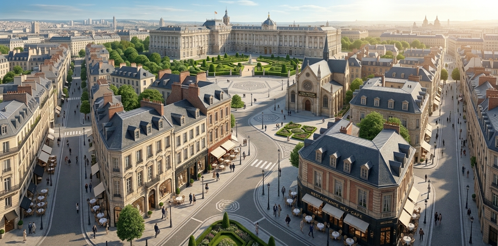

El Valle del Hex es una de las zonas más elegantes de Westview. Se caracteriza por sus edificios históricos, tiendas, restaurantes y espacios culturales. Su nombre viene del sistema de numeración en base 16 que decora fachadas y plazas.

Es una zona interesante para combinar historia, arquitectura, cultura y compras. El Palacio #FF5733 es uno de los principales atractivos de la ciudad.
Si querés saber más sobre este sistema de numeración, mirá el sistema hexadecimal en Wikipedia.